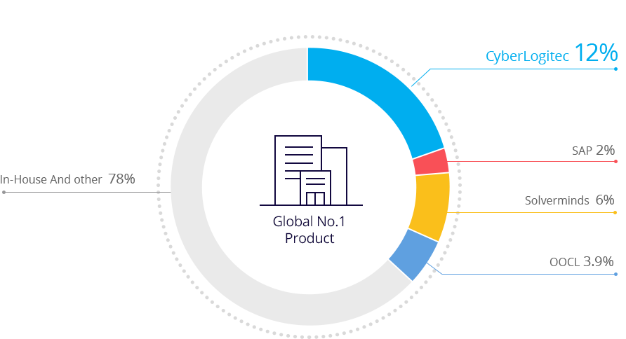

ABOUT US
Who we are?
CONTAINER SW MARKET SHARE
To Become the Most Respected
Knowledge-based Company in Asia by 2021
The Best Partner
Making History
CyberLogitec is a leading IT solution provider in martime, terminal, and logistics operations.
Present2017
- 2015
- ISO 27000-1 Certification, ISO 20000-1 Certification
- OPUS Container
- Camellia Line
- Pacific International Line
- OPUS Terminal Jebel Ali Terminal Ⅱ and
Terminal Ⅳ Korea Incheon New Port - OPUS Bulk H-Line OPUS Forwarding BINEX IMPEX
- 2013
- OPUS Container Heung-A Shipping Kambara-Kisen
- OPUS Terminal
- Turkey Asya Port (TIL)
- Saudi King Abdullah Port
- Indonesia Potianak Container Terminal
- Indonesia Tanjung Priok Container Terminal
- OPUS Bulk
- Kambara-Kisen, Polaris Shipping, Hayne Shipping Intergis
- 2011
- OPUS Terminal/ Eagle Eye Dubai Jebel Ali Terminal 3
- Total Terminal International America LLC
(Longbeach, Seattle, Oakland) - OPUS Bulk lnui-Steamship
- OPUS Forwarding A.I. F.
- 2008
- OPUS Container Hanjin Shipping
- OPUS Forwarding Hyundai Glovis
- OPUS Terminal
- Spain TTI Algeciras Terminal
- Pusan New Port
- Hanjin New Port
- 2002
- ISO 9001 : 2000 Certification
- 2000
- Eastablished
Why CyberLogitec?
Making the World’s Time and Space More Valuable
- System
Maintenance
Capability- A wealth of shipping line
system maintenance experience - 24 hour 7day support through
global network of CyberLogitec
- A wealth of shipping line
- Project
Management
Capability- Provides proven Design /
Implementation /
Test methodology and project - management service
Experienced in applying solutions
to various prehistoric spectrum
- Provides proven Design /
- Shipping Biz &
System Professionalism
- Standardize the process of view
and expert personnel
with consulting capability - Shipping line biz having
total solution group
high level of integration
and interface understanding - Long roadmap for product
shipbuilding biz is able to
respond to the environment
in a timely manner - Advanced IT
development technology